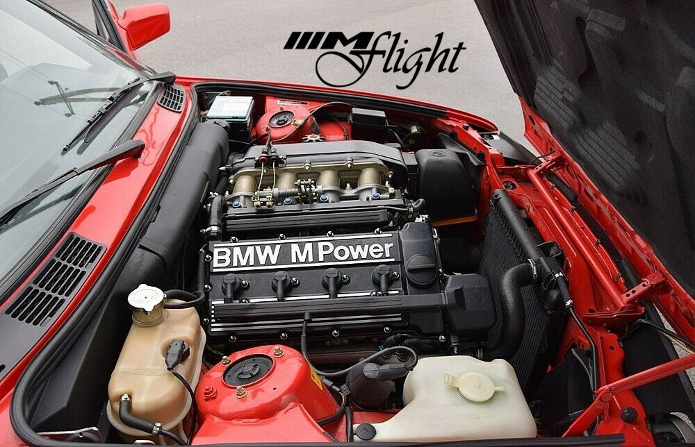
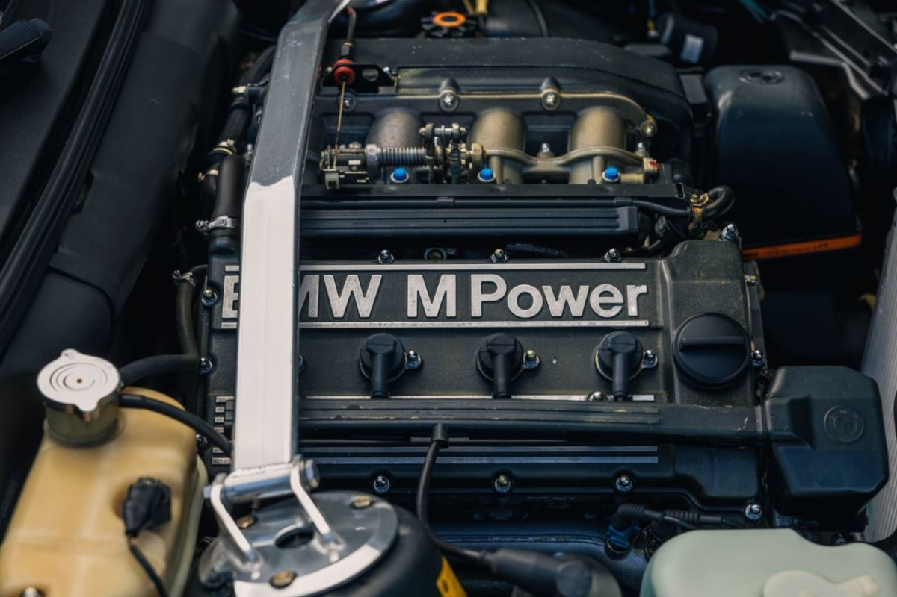
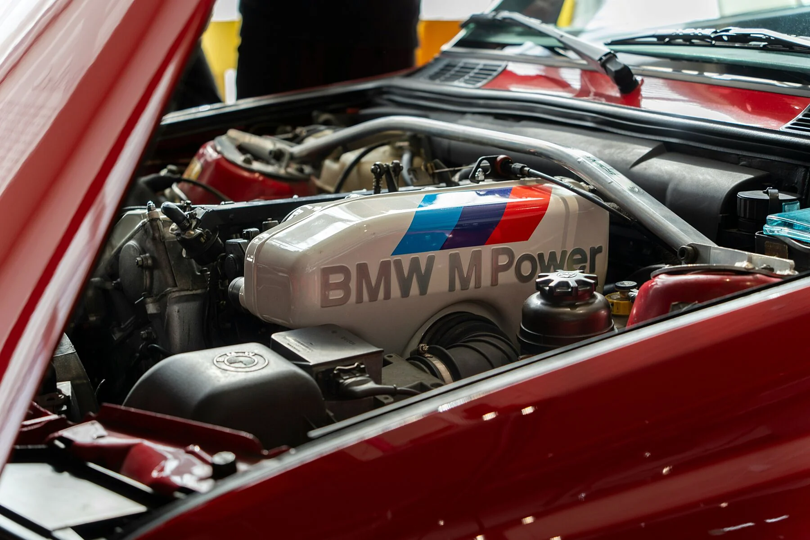

| Motor S14B23 | ||
|---|---|---|
|
El BMW E30 M3 utiliza un motor de cuatro cilindros en línea, conocido como el S14B23, que tiene un desplazamiento de 2.3 litros y fue desarrollado específicamente para esta versión. A diferencia de otros E30, que usaban motores de seis cilindros en línea, BMW optó por un motor más compacto y ligero para mejorar el equilibrio y la maniobrabilidad del auto, características esenciales para el automovilismo de competición. La versión de calle montaba un motor de 4 cilindros en línea de 2.3 litros, conocido como el S14, que producía alrededor de 195-215 caballos de fuerza en sus distintas versiones. Era un motor ligero y de alta compresión, diseñado para un rendimiento óptimo en pistas. Fue diseñado para el éxito en las pistas de carreras y desarrollado en paralelo con el DTM (Deutsche Tourenwagen Masters), una de las series de automovilismo más prestigiosas de Alemania. Para competir, BMW necesitaba producir una versión de calle, lo que resultó en el icónico E30 M3. Su motorización fue uno de los elementos clave que lo convirtieron en un clásico legendario. |
||
|  |  |  |